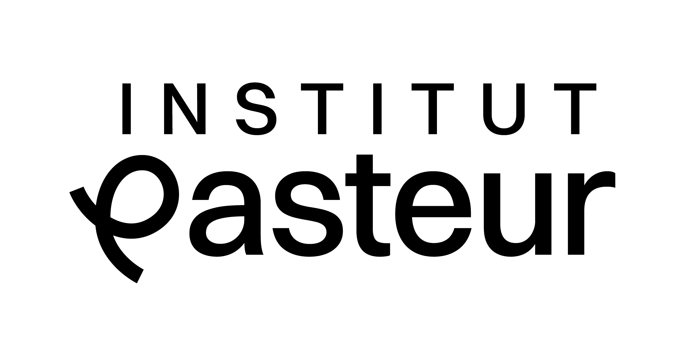

权威机构链接
以下是关于基孔肯雅热最权威的官方信息来源，可供您进一步学习和查证。
- 世界卫生组织 (WHO): 基孔肯雅热事实清单
提供关于该疾病最全面、最基础的全球性权威信息。 - 美国疾病控制与预防中心 (CDC): 疫苗信息专页
为医疗专业人员提供关于已获批疫苗的详细临床指南。 - 梅奥诊所 (Mayo Clinic): 专家问答
以通俗易懂的语言回答公众关于基孔肯雅热的常见问题。 - 中国国家卫生健康委员会 (NHC): 政策通知
关于印发基孔肯雅热诊疗方案（2025年版）的通知。 - VIMKUNYA™ 疫苗官网: 接种服务（限美国地区）
输入邮编，寻找美国本地可提供接种服务的诊所。
前沿研究：最新进展与未来方向
当前最新研究进展
- 靶向治疗的突破：单克隆抗体（mAbs）的研发已进入关键阶段。针对CHIKV病毒的强效中和抗体已在临床试验中显示出良好的预防潜力，有望成为暴露后紧急预防和早期治疗的药物。
- 诊断技术的革新：基于CRISPR-Cas等基因编辑技术的快速诊断平台正在被开发，未来有望实现现场快速检测，对于控制早期疫情传播至关重要。
- 疫苗的成功上市：IXCHIQ® 和 VIMKUNYA™ 两款疫苗在2023-2025年间的获批是近年来最重大的里程碑，标志着人类首次拥有了针对此病的特异性预防武器。
未来重点研究方向
- 攻克慢性关节炎：这是未来十年研究的核心。方向包括：阐明病毒持续存在的机制、识别导致自身免疫的关键靶点，并筛选能有效干预慢性炎症的药物。
- “同一健康”（One Health）的整合预警：构建整合气候变化、蚊媒监测、动物宿主和人类病例的多维度智能预警平台。
- 下一代疫苗的研发：开发成本更低、热稳定性更好、能提供广谱保护的疫苗，以满足全球中低收入国家的需求。
权威基石：巴斯德研究所与基孔肯雅热研究

在全球范围内，法国的巴斯德研究所（Institut Pasteur）是在基孔肯雅热研究领域贡献最卓著、地位最权威的学术机构之一。
- 奠定现代认知：在2005-2006年法属留尼汪岛疫情中，巴斯德研究所的科学家们首次分离并鉴定了携带E1-A226V突变的关键病毒株，揭示了病毒具备全球大流行潜力的分子基础。
Tsetsarkin, K. A., et al. (2007). PLoS Pathogens. - 深度解析致病机理：其团队在病毒如何引发慢性关节炎、如何穿过胎盘和血脑屏障等方面做出了奠基性工作。
- 构建全球防线：其开发的诊断方法是全球“金标准”，其遍布五大洲的国际网络构成了全球疾病的“哨兵网络”，进行实时监测和预警。
- 疫苗研发的“第一棒”：其对病毒株的开创性研究，为后续商业疫苗（如IXCHIQ®）的开发奠定了成功基础。